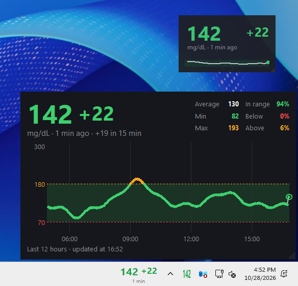
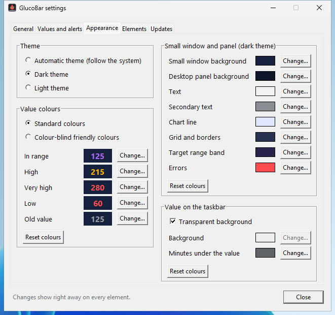
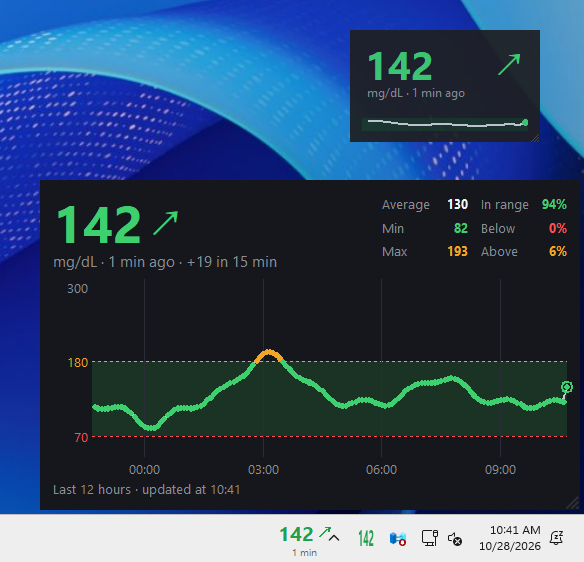
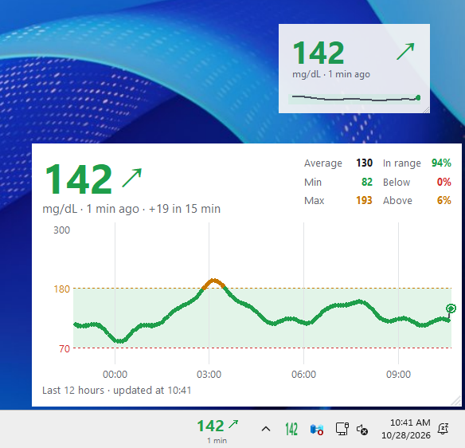
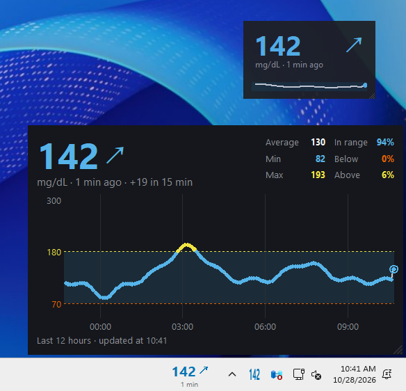
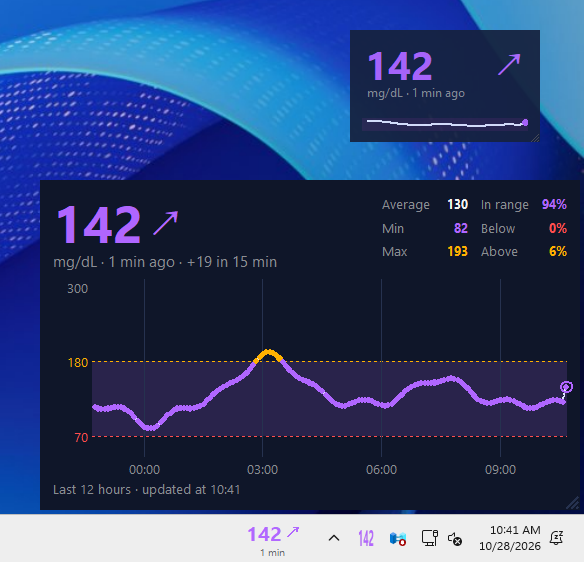
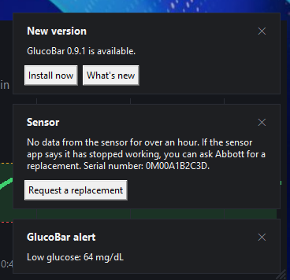
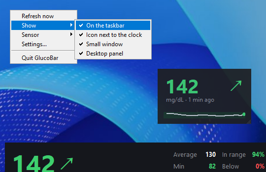
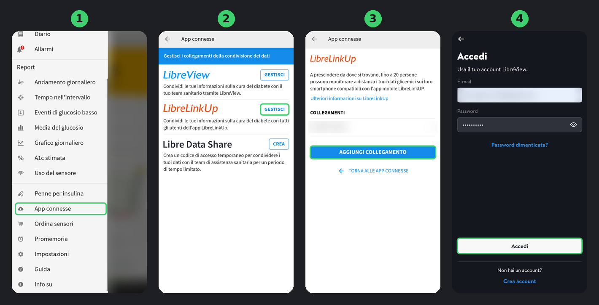

Your glucose on the Windows taskbar, next to the clock.
GlucoBar shows your FreeStyle Libre or Dexcom reading on your PC, with the trend and how long ago it was measured, so you can keep an eye on it while you work without reaching for your phone.
GlucoBar shows your FreeStyle Libre or Dexcom reading on your PC, with the trend and how long ago it was measured, so you can keep an eye on it while you work without reaching for your phone.
GlucoBar is not a medical device. Do not use it to decide insulin doses or to treat a hypo: always rely on your reader or the official app. It uses unofficial sharing APIs that the manufacturers can change at any time.
Pick where you want to see the value when you install, and change it any time with a right-click. The colour tells you where you are: green in range, orange high, red low or very high, grey when the reading is old.
Value, arrow and minutes next to the clock. Follows the taskbar on any edge, on a second monitor and when it hides itself.
Always on top, with a 3-hour chart. Drag it anywhere and resize it from the corner.
Chart of the last 3, 6 or 12 hours, average, min, max, time in range and sensor day. Behind your windows, or always on top.
The coloured number in the notification area. Hover it for the arrow and the minutes.
Rest the mouse on the value on the taskbar for a second and the full chart opens just above it. Move the mouse away and it closes.
Next to the value you can show the trend arrow, the change since the previous reading (the delta, as in "142 +5"), or both.

Light, dark or automatic theme, which follows Windows or macOS. There is also a palette that works with the common forms of colour blindness, or you can pick your own colour for everything: the value in range, high, very high, low and old, backgrounds, text, chart and grid.
Thresholds are yours too: the defaults are 70 and 180 mg/dL, with very high above 250.






Right-click any GlucoBar element for the quick actions: refresh, what to show, sensor, settings. Everything else is in the Settings window, in tabs, and every change shows right away.

From the menu. The default is one minute.
The desktop panel can stay on top of a video or a game, like picture-in-picture, with adjustable opacity.
Follow several people with the same LibreLinkUp account and switch from the menu.
Change the unit any time from Settings.
English, Italian, Spanish, French, German and Portuguese.
glucobar prints the reading and changes settings, for scripts and status bars.
GlucoBar does not talk to the sensor. It reads the latest value from the same sharing service your phone already uploads to.
| Sensor | Read through | Status |
|---|---|---|
| FreeStyle Libre 2 and 3, and their Plus versions | LibreLinkUp | Supported |
| Dexcom G6, G7, ONE+ | Dexcom Share | Beta works with a G7, G6 and ONE+ testers wanted |
| Anything that uploads to Nightscout or Nocturne (xDrip+, Juggluco, AndroidAPS, Loop, Medtronic, Eversense…) | Nightscout API | Beta testers wanted |
| Medtronic Guardian / Simplera | CareLink | Being evaluated |
Would you like another sensor? Tell us which one.
About five minutes, most of it on the phone. No administrator rights needed.
GlucoBar-Setup.exe always gives you the latest version. Windows may say "Windows protected your PC" because the installer is not code-signed yet: click More info, then Run anyway.
Tick where you want the value (with previews) and whether to start GlucoBar with Windows.
Choose your sensor and enter the account: the same email and password as LibreLink, or your Dexcom account, or your Nightscout address and token.
In LibreLink: Connected Apps → LibreLinkUp → Manage → Add Connection. Then sign in to LibreLinkUp once with the same account and accept the invitation.

The value sits in the menu bar, next to the clock; the small window and the desktop panel work as on Windows. Apple silicon, macOS 11 or later. Download GlucoBar-mac.dmg. The first time, allow it in System Settings → Privacy & Security → Open Anyway.
Short answers. The full guide is on GitHub.
Yes, and it will stay free: no subscription, no paid features, no ads. The code is open source under the MIT licence. If you want to support it, there is an optional PayPal donation.
The installer is not code-signed yet, and SmartScreen warns about any program it has not seen often. The code and the build are public on GitHub, and every release lists the installer's SHA-256 and a link to its VirusTotal scan, so you can check the exact file.
It is stored encrypted in Windows Credential Manager (or the macOS Keychain) and is only sent to your sensor maker's servers or to your own Nightscout site. GlucoBar has no servers and no analytics.
No. It shows what the sharing service provides at the moment and keeps nothing on your PC. For history and reports, use LibreView, Clarity or Nightscout.
As far as the sharing service. GlucoBar checks every minute by default; you can choose anything from 10 seconds to 5 minutes. A FreeStyle Libre uploads a new value every minute, a Dexcom every five.
GlucoBar checks once a day and shows a message when there is one. One click installs it and keeps your settings, or turn on automatic installation in Settings → Updates.
No. Its alerts are optional and only work while your PC is on and online. Keep the alarms on your reader or phone.
GlucoBar gets better with your reports. You can write in English or Italian.
Something does not work as expected. A short form asks what happened and what you use.
Open an issueA feature you would like, or a sensor GlucoBar should support.
Share an ideaHelp with installing or setting up, or anything you are not sure about.
Ask in DiscussionsSee what has already been reported and what is being worked on.
View all issuesReporting a bug? Open a terminal and run glucobar report: it prints
what we need to help, with your email, password and readings hidden. Paste it into the form.
You need a free GitHub account to post.